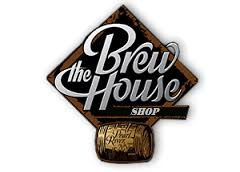

Lasciarsi inebriare dal loro profumo e dagli aromi naturali, pazientemente selezionati/lavorati da mani sapienti.
Assaporarle a occhi chiusi per perdersi nei loro sapori esplosivi, ma al tempo stesso delicati.
Viaggiare alla ricerca dei prodotti migliori, che vi facciano sentire il calore di un ambiente familiare, e il profumo dei campi in cui siete cresciuti, un profumo e un sapore sempre pronto ad accogliervi e avvolgervi.
Perché le birre per noi non sono tutte uguali.
Questo è lo spirito del The BrewHouse Shop, nato in una tranquilla sera d’estate trascorsa sulla spiaggia in compagnia di buoni amici a parlare di sogni, speranze e cambiamenti.
Il nostro Obiettivo è quello di portare nelle vostre tavole i migliori prodotti artiginali in circolazione e oltrepassare i confini regionali e nazionali.
Nati e cresciuti in un piccolo paese del Sud Sardegna vogliamo essere "un ponte della conoscenza", per farvi assaporare la storia delle nostre terre.
Siamo ogni giorno alla continua ricerca della qualità, genuinità e tracciabilità degli ingredienti.
The Brewhouse Shop ha selezionato per voi le migliori birre artigianali, rigorosamente Made in italy, realizzate con Malto, Grano, Luppoli nostrani e acqua delle migliori fonti italiane.
Tutti i presenti e futuri venditori possono caricare una grande vastità di prodotti appartenenti alla categoria della Birra.
Tra le categorie di birre che possono essere messe in vendita troviamo:
Oltre alla semplice vendita di Birre Artiginali, potrai inseririre una vasta scelta di tipologie di Bicchieri e altri prodotti del Mondo della Birra:
Tutti i birrifici artigianali in possesso di P.Iva, posso iniziare a vendere tramite il nostro eCommerce in totale tranquillità.
Effettuate l'accesso e tramite la pagina Venditore, potrete caricare tutti i vostri prodotti pronti da essere messi in vendita.
Sarà necessario specificare Nome del prodotto, inserire una foto che rappresenti l'oggetto in vendita, una descrizione dettagliata, la quantità da mettere in vendita e infine il prezzo Cad.1 iva inclusa.
Tutti i vostri dati verranno trattati con la massima riservatezza.
Tutti gli acquirenti potranno in qualsiasi momento effettuare l'accesso alla loro area riservata, scegliendo una Username e una Password.
Tramite l'area Clienti potranno in qualsiasi momento visionare la vastissima scelta di prodotti, leggere le caratteristiche, vedere le foto e in qualsiasiasi momento ordinare semplicemente aggiungendo al carrello i prodotti di vostro interesse e la relativa quantità.
Dopo avere effettuato il pagamento, basterà attendere 3/4 giorni lavorativi per ricevere la merce a casa vostra tramite corriere espresso.
"Quando la bevo sto benissimo: l’umore è allegro, il cuore contento e il fegato felice." (Tavoletta sumera, 3600 a.C.)
Le origini della birra sono antiche e risalgono a circa 13.000 anni fa, quando l'uomo cessò di condurre una vita da nomade e si stabilì in maniera fissa sul territorio, cominciando a coltivare cereali come il frumento.
Le prime testimonianze nella storia della preparazione di una bevanda simile alla birra da parte dei Sumeri, gli abitanti della fertile fascia di terra tra il Tigri e l'Eufrate, sono datate all'incirca a 6.000 anni fa.
Si narra che il processo di fermentazione fu scoperto per puro caso; sebbene nessuno sappia con precisione come accadde, si suppone del pane o del grano macinato fu lasciato per sbaglio ad inumidire. Successivamente il pane cominciò a fermentare trasformando la mollica in una pasta inebriante.
Un bassorilievo sumero riporta la descrizione del processo di creazione della birra; si può notare dell'orzo, del pane cotto e successivamente inumidito nell'acqua per formare una poltiglia ed infine una bevanda con la proprietà di “fare stare bene chi la beveva”. Può darsi che il pane fosse cotto per favorirne la conservazione ed il trasporto.
Sulla base di questi rinvenimenti si suppone che i Sumeri siano stati la prima popolazione civilizzata della storia capace di produrre birra, bevanda che, oltre ad esser bevuta, veniva offerta in dono agli Dei; è stato scoperto infatti un vero e proprio inno alla dea della birra Ninkasi, il cui testo altro non è che la ricetta su come produrre birra.
Dopo la caduta dell'impero sumero nel 2000 A.C. la Mesopotamia divenne terra dei Babilonesi, che assorbirono la cultura e l'arte di produrre birra; le testimonianze ci dicono che questa popolazione ne produceva ben 20 varietà. Di cui 8 di puro frumento, 8 di puro orzo e 4 derivate da una mistura di vari cereali.
A quel tempo la birra era torbida e non filtrata, perciò la birra veniva bevuta con la cannuccia, per evitare che i residui molto amari si depositassero sulle labbra. La birra fu persino esportata in Egitto, ad oltre 1000 km di distanza, e tale fu la sua importanza nella società babilonese che il re Hmmurabi inserì una legge nel suo famoso codice che stabiliva la quota massima di birra concessa giornalmente agli abitanti, che variava, a seconda della classe sociale, dai 2 ai 5 litri.
Nella storia la birra divenne anche merce di scambio; veniva infatti barattata con orzo ed altri cereali. Tuttavia non poteva essere venduta; si narra che Hammurabi condannò all'annegamento una donna per aver venduto la propria birra in cambio d'argento. La pena dell'annegamento era destinata anche a chi servisse della birra non buona.
Esistono vari tipi di fermentazione, tra le piú importanti troviamo:
Si intendono per stili di birra le varie categorie nelle quali vengono suddivisi i vari tipi di birra.
Le birre vengono divise in tre macro-categorie in base al tipo di lievito utilizzato per produrle, e di conseguenza al tipo di fermentazione.
Le tre macro-categorie sono: le Ale, le Lager e le Lambic.
Ognuna di queste tre tipologie presenta altre suddivisioni in base a caratteristiche quali il colore, il sapore, la gradazione alcolica, gli ingredienti utilizzati, un particolare metodo di produzione o anche semplicemente alla storia e alle sue origini.
Volendo fare alcuni esempi: lo stile Bitter deriva il suo nome dal significato inglese della parola bitter che significa amaro, le Lager derivano il proprio nome dal fatto che vengono fatte maturare a lungo in magazzino (in tedesco lager appunto) oppure lo stile Pils che deriva il suo nome dalla città di Pilsner in Repubblica Ceca.
Il termine homebrewing solitamente si riferisce alla birrificazione domestica o casalinga, ossia all'arte di produrre la birra in casa. Data la non banalità dell'operazione, solitamente si fa ricorso ad appositi kit reperibili in commercio, che contengono tutta l'attrezzatura necessaria. A questa occorre solamente aggiungere gli ingredienti principali, quali malto, luppolo, zucchero e acqua.
La possibilità di produrre birra in casa per usi personali è sancita dall'art. 34, co. 3, del decreto legislativo 26 ottobre 1995, n. 504, che testualmente afferma: "È esente da accisa la birra prodotta da un privato e consumata dallo stesso produttore, dai suoi famigliari e dai suoi ospiti, a condizione che non formi oggetto di alcuna attività di vendita".
Il processo produttivo della birra viene chiamato "birrificazione" o "brassaggio" e richiede numerose fasi di lavorazione.
La prima di queste fasi è la "maltificazione": l'orzo o gli altri cereali, dopo essere stati selezionati e ripuliti, vengono immessi nelle vasche di macerazione dove ricevono l'acqua e l'ossigeno necessario per la germinazione.
Questo processo dura in genere tre o quattro giorni durante i quali l'acqua è mantenuta a temperature comprese fra i 12 e i 15 gradi e viene continuamente cambiata. Una volta che è stato raggiunto il grado di umidità sufficiente, l'orzo viene messo a germinare per circa una settimana nei cassoni di germinazione o comunque in un luogo ben aerato.
Il processo viene arrestato tramite essiccazione o torrefazione quando il germoglio ha raggiunto circa i due terzi della lunghezza del chicco.
L'orzo maltato viene quindi macinato fino ad ottenere una specie di farina che viene poi miscelata con acqua calda a circa 65-68 gradi. Questa fase è detta ammostamento, in quanto il malto si trasforma in mosto. Precisamente questo avviene quando l'amido ancora presente nel malto si trasforma in uno zucchero, il maltosio. La massa, mantenuta in agitazione viene portata, con opportune soste, alle temperature ottimali per l'attività enzimatica di degradazione di amido e proteine, favorendone così la solubilizzazione nel mosto.
La parte liquida viene quindi separata dalla parte solida tramite "filtrazione" all'interno di un tino filtro, in cui il mosto con le trebbie viene pompato dal basso. Quando tutto il mosto è stato trasferito, si lascia che le trebbie sedimentino sul falso fondo forato, e si procede quindi alla filtrazione. Per raggiungere un buon livello di limpidezza, il mosto viene fatto ricircolare più volte.
Il passo successivo è la cottura del mosto all'interno di apposite caldaie, tradizionalmente in rame che è un ottimo conduttore termico e che non si degrada eccessivamente. Il tempo di cottura è fondamentale per la scelta del tipo di birra che si vuole produrre ed anche per la sua qualità, in quanto durante questo processo avvengono la gran parte delle reazioni biochimiche; normalmente varia tra un'ora e due ore e mezza. Durante la bollitura, che nei birrifici moderni avviene tramite getti di acqua bollente ad alta pressione, si ha anche l'importante processo di sterilizzazione del mosto. Sempre durante questa operazione avviene l'aggiunta del luppolo. In genere la sala di cottura viene considerata come il "cuore" del birrificio.
Nel corso dell'ebollizione, in seguito a reazione tra i polifenoli del malto e del luppolo e le proteine del malto, si formano complessi insolubili che costituiscono il "trub a caldo". Questo tende a precipitare al termine del processo e l'allontanamento è considerato fondamentale per la qualità e la stabilità della futura birra. Tale azione è effettuata mediante l'uso del whirlpool, tino nel quale il mosto giunge tangenzialmente generando una forza centrifuga che determina la raccolta della fase torbida sul fondo, al centro del recipiente, e permette la separazione di una fase liquida limpida.
In seguito il mosto viene raffreddato fino a temperature alle quali può avvenire la fermentazione: dai 4 ai 6 gradi per la bassa fermentazione e dai 15 ai 20 gradi per quella alta.
La fermentazione si divide in due fasi:
La prima, detta fermentazione principale, vede come principale protagonista il lievito che ha la funzione di trasformare gli zuccheri e gli aminoacidi presenti nel mosto in alcol, anidride carbonica e sostanze aromatiche. Il processo che utilizza Saccharomyces cerevisiae è più rapido (in genere tre o quattro giorni) di quello a bassa fermentazione, in quanto si svolge a temperature superiori, e i processi di fermentazione sono favoriti dal calore. Questo lievito inoltre risale in superficie e viene recuperato con schiumature, e per questo è notevolmente economico.
La fermentazione secondaria detta maturazione invece consiste nel lasciare per circa quattro o cinque settimane la birra in grosse vasche di maturazione, ad una temperatura compresa fra 0 e 2 gradi. Questa operazione permette di saturare di anidride carbonica la birra e di far depositare i residui di lievito, oltre che per armonizzare i vari ingredienti.
Infine c'è la pastorizzazione, che è un processo al quale non tutte le birre vengono sottoposte, che consiste nel portare la birra a una temperatura di 60 gradi per distruggere alcuni microrganismi e quindi conservare maggiormente il prodotto. La birra non pastorizzata viene definita cruda.
Alla fine del processo alcune birre vengono filtrate per toglierle i residui di opacità e infine imbottigliate o infustate.
Esistono alcune birre che sono "rifermentate in bottiglia". In questo caso, prima di chiudere il tappo, si aggiunge del lievito in modo che, oltre alle due ordinarie fermentazioni, ne avvenga una terza che aumenta il tasso alcolico. Sono un'eccezione le birre di frumento che, pur avendo lievito all'interno della bottiglia, mantengono una gradazione normale.